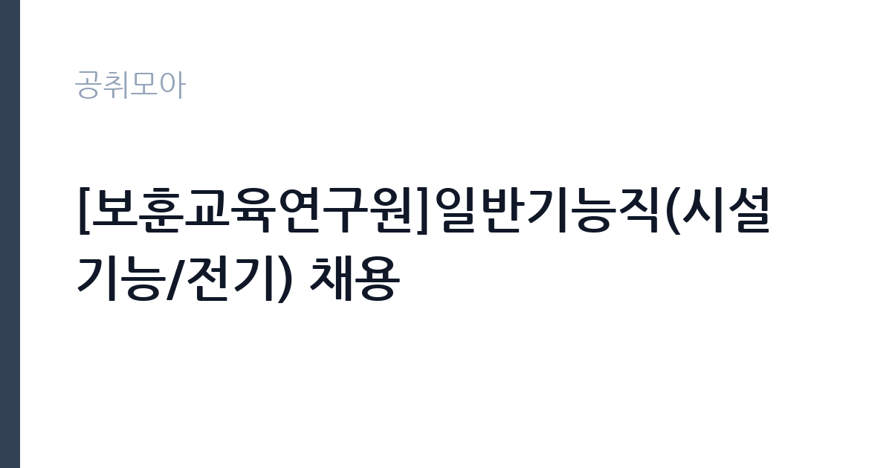

[공공기관] [보훈교육연구원]일반기능직(시설기능/전기) 채용
한국보훈복지의료공단 · 경기 · 마감 2026-10-30 (D-15) · 출처 잡알리오

한눈에 보는 모집 조건
| 기관 | 한국보훈복지의료공단 |
|---|---|
| 공고명 | [보훈교육연구원]일반기능직(시설기능/전기) 채용 |
| 고용형태 | 정규직 |
| 근무지 | 경기 |
| 게시일 | 2026-10-16 |
| 마감일 | 2026-10-30 (D-15) |
지원자격, 이렇게 읽으세요
- 공공기관 채용공시
- 세부 조건은 원문 공고문 확인
필수자격은 전기산업기사 이상 자격증 소지입니다. 기능사 등급으로는 지원할 수 없으니 자격 등급을 먼저 확인하시기 바랍니다. 3교대 야간근무 가능 조건이 붙어 있어 교대 근무가 어려운 분은 지원이 어렵습니다. 공통자격으로는 공단 인사규정의 결격사유 부재와 정년 미도달, 남성 병역필 또는 면제가 있으며 세부 사항은 보훈교육연구원 채용 게시판의 원문 공고에서 확인하셔야 합니다.
이 공고의 포인트
이 공고의 매력은 공공기관 정규직이면서 전기산업기사 하나면 도전할 수 있다는 점입니다. 보훈교육연구원은 보훈 대상자 교육과 연수를 맡는 기관이라 시설이 연중 가동되며 설비직의 역할이 분명합니다. 정년 만 60세까지 보장되고 3교대 수당이 붙으면 실수령이 올라가는 구조라 교대 근무를 감당할 수 있는 분께는 실속 있는 자리입니다. 보훈병원 시설직과 같은 공단 내 순환 기회가 생길 수도 있습니다.
전형은 어떻게 진행되나
접수는 10월 30일 마감이며 원문은 보훈교육연구원 누리집 채용정보 게시판에서 확인하실 수 있습니다. 전형은 서류와 면접 순으로 진행되는 것이 일반적이며 시설직은 실무 이해도를 묻는 면접이 포함될 수 있습니다. 자격증 사본과 병역 증빙을 미리 준비하시고 교대 근무 가능 여부는 지원 전에 가족과 상의해 두시기 바랍니다. 같은 연구원에서 행정직 채용도 함께 진행된 바 있어 게시판에서 회차별 공고를 구분해 보시기 바랍니다.
원문에서 확인한 전형 방식
○ 공단 인사규정 제18조(결격사유)에 해당하지 않는 자 ○ 공단 인사규정 제44조(정년)에 따라 정년(만60세)에 도달하지 않은 자 ○ 남성의 경우 병역필 또는 면제자(입사 예정일 이전 전역가능자 포함) ○ 전기산업기사 이상 자격증 소유자 ○ 동절기 및 기관 필요시 3교대(야간 근무포함) 가능자
이런 분께 추천해요
- 전기산업기사 이상 자격증을 보유한 분께 적합합니다.
- 3교대 야간근무가 가능하고 설비 현장 일을 선호하는 분께 권합니다.
- 공공기관 정규직의 안정성과 정년을 중시하는 분께 잘 맞습니다.
지원 전 체크리스트
- 보유 자격증이 전기산업기사 이상 등급인지 확인했습니다.
- 3교대 야간근무 가능 여부를 본인 일정과 맞춰 판단했습니다.
- 공단 인사규정의 결격사유에 해당하지 않는지 확인했습니다.
- 원문 공고의 제출서류와 접수 방법을 마감 전에 확인했습니다.
모집 일정과 제출 타이밍
공고 등록일은 10월 16일이며 접수 마감은 10월 30일로 2주 가량입니다. 자격증 사본과 경력증명서 발급에 며칠이 걸리므로 접수 첫 주에 서류를 갖추시기 바랍니다. 서류전형과 면접을 거쳐 합격하면 기관 일정에 맞춰 임용되며 세부 일정은 원문 공고의 일정표를 따릅니다. 채용 게시판에는 합격자 발표 공고도 함께 올라오니 접수 후에도 게시판을 주기적으로 확인하시기 바랍니다.
직무 이해하기: 공공기관
보훈교육연구원 시설기능직은 교육원 건물과 기숙사, 강의동의 전기 설비를 맡습니다. 보일러와 냉난방 설비의 전원 관리가 겨울철 핵심 업무이며 강의실 조명과 음향 전원, 소방 전기 설비의 점검이 일상입니다. 교육생이 입소하는 기간에는 새벽과 야간에도 시설 대응이 필요해 3교대 체제로 운영됩니다. 연수원 특성상 주말 교육 과정이 열리면 휴일 근무가 발생할 수 있으니 근무표에 따른 생활 리듬 적응이 필요합니다.
자기소개서 작성 팁
시설직 자기소개서에서는 자격 취득 과정과 현장 대응 경험을 중심으로 쓰시기 바랍니다. 전기 설비 고장을 직접 조치했던 사례를 시간 순으로 적으면 실무 역량이 드러납니다. 교대 근무 경험을 언급하면 3교대 조건에 대한 수용 의지를 보여줄 수 있습니다. 보훈 기관 지원 동기에는 국가유공자와 보훈 가족을 위한 시설을 지킨다는 자부심을 담으시면 진정성이 생깁니다.
면접 준비 포인트
면접에서는 전기 실무 기초와 교대 근무 수용도를 묻습니다. 수변전설비 점검 순서와 비상발전기 시운전 절차 같은 기본기를 묻는 질문에 현장 용어로 답하시기 바랍니다. 야간 근무 중 단독으로 설비 이상이 발생했을 때의 대응 순서를 묻는다면 보고 체계와 초동 조치 순으로 설명하시면 좋습니다. 3교대 가능 여부에 대한 질문에는 확정적으로 답하시는 것이 좋습니다.
급여·근무조건 읽는 법
이번 공고 요약에는 보수 금액이 공개되어 있지 않아 정확한 급여는 원문 공고문에서 확인하셔야 합니다. 공공기관 일반기능직의 보수는 공단 보수규정에 따라 책정되며 교대 근무 시 야간근로수당 등이 더해지는 구조가 일반적입니다. 참고로 공공기관 보수는 알리오 경영공시에 기관별 평균보수가 공개되니 보훈복지의료공단의 공시 자료를 함께 보시면 판단에 도움이 됩니다. 출처 없는 연봉 수치는 기재하지 않으며 기본급과 수당, 상여의 구분과 실수령액은 원문과 기관 문의를 통해 확인하시기 바랍니다. 경쟁률과 합격선도 공개되지 않았습니다.
자주 묻는 질문
- 전기기능사 자격증으로 지원할 수 있나요?
지원할 수 없습니다. 전기산업기사 이상이 필수자격으로 명시되어 있습니다. 기능사 등급 보유자는 기사 등급 취득 후 도전하시기 바랍니다. - 3교대 근무는 필수인가요?
동절기와 기관 필요시 3교대 야간근무가 가능한 자가 자격요건에 포함되어 있습니다. 교대 근무가 어려운 분은 지원이 어려우니 사전에 판단하시기 바랍니다. - 근무지는 어디인가요?
보훈교육연구원은 경기 수원시 장안구에 있습니다. 출퇴근 거리와 교대 근무 시の 통근 수단을 미리 점검하시기 바랍니다.
함께 보면 좋은 공고
[공공기관] 대한적십자사 재외동포지원본부 무기계약직 채용 공고 — 마감 2026-11-26[공공기관] 중소벤처기업진흥공단 안전관리실장(개방형 직위) 채용 공고 — 마감 2026-10-30[공공기관] 한국석유공사 2026년 직원(기간제) 채용 공고 — 마감 2026-10-30출처: 잡알리오 공개정보를 바탕으로 공취모아가 정리한 안내글입니다. 모집 조건·일정은 변경될 수 있으니 지원 전 반드시 원문 공고문을 확인하세요. 본 글은 정보 제공용이며 합격을 보장하지 않습니다.